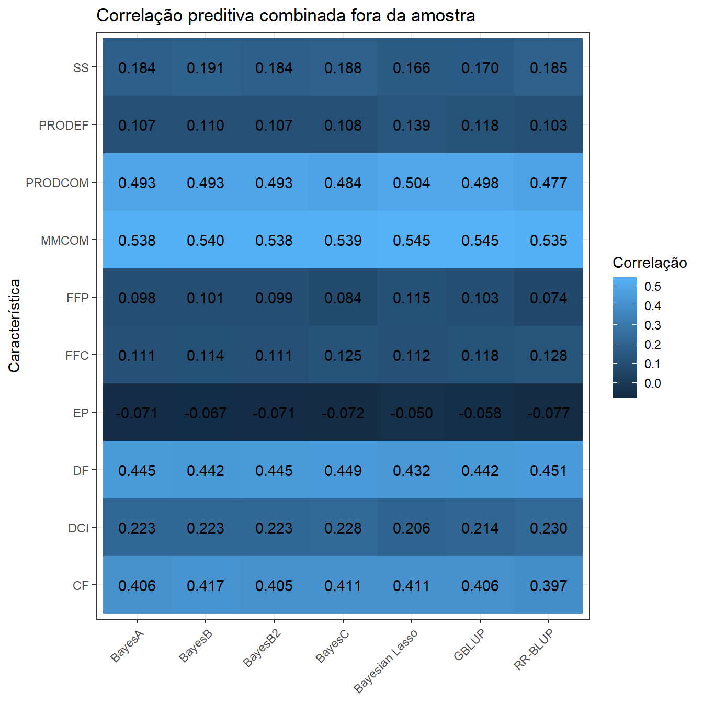
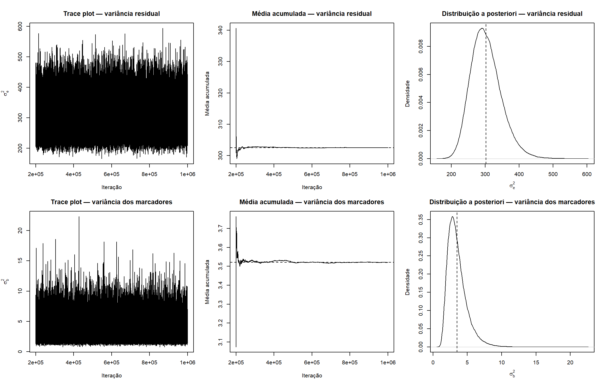

Last updated: 2026-08-10
Checks: 7 0
Knit directory:
Bayesian-ridge-regression-papaya/
This reproducible R Markdown analysis was created with workflowr (version 1.7.2). The Checks tab describes the reproducibility checks that were applied when the results were created. The Past versions tab lists the development history.
Great! Since the R Markdown file has been committed to the Git repository, you know the exact version of the code that produced these results.
Great job! The global environment was empty. Objects defined in the global environment can affect the analysis in your R Markdown file in unknown ways. For reproduciblity it’s best to always run the code in an empty environment.
The command set.seed(20260717) was run prior to running
the code in the R Markdown file. Setting a seed ensures that any results
that rely on randomness, e.g. subsampling or permutations, are
reproducible.
Great job! Recording the operating system, R version, and package versions is critical for reproducibility.
Nice! There were no cached chunks for this analysis, so you can be confident that you successfully produced the results during this run.
Great job! Using relative paths to the files within your workflowr project makes it easier to run your code on other machines.
Great! You are using Git for version control. Tracking code development and connecting the code version to the results is critical for reproducibility.
The results in this page were generated with repository version b54ac21. See the Past versions tab to see a history of the changes made to the R Markdown and HTML files.
Note that you need to be careful to ensure that all relevant files for
the analysis have been committed to Git prior to generating the results
(you can use wflow_publish or
wflow_git_commit). workflowr only checks the R Markdown
file, but you know if there are other scripts or data files that it
depends on. Below is the status of the Git repository when the results
were generated:
Ignored files:
Ignored: .Rproj.user/
Ignored: .github/
Ignored: code/
Ignored: data/Bayesiana goiaba Eileen SReport.pdf
Ignored: output/matrices/
Ignored: output/models/full/bglr_runs/
Ignored: output/models/full/runs/
Ignored: output/models/full/temporary/
Ignored: output/preprocessing/
Ignored: renv/library/
Ignored: renv/staging/
Note that any generated files, e.g. HTML, png, CSS, etc., are not included in this status report because it is ok for generated content to have uncommitted changes.
These are the previous versions of the repository in which changes were
made to the R Markdown (analysis/03_models_pt.Rmd) and HTML
(docs/03_models_pt.html) files. If you’ve configured a
remote Git repository (see ?wflow_git_remote), click on the
hyperlinks in the table below to view the files as they were in that
past version.
| File | Version | Author | Date | Message |
|---|---|---|---|---|
| Rmd | b54ac21 | WevertonGomesCosta | 2026-08-08 | fix: preserve native BGLR model outputs |
| html | 04ec56f | WevertonGomesCosta | 2026-08-07 | docs: publish representative MCMC diagnostics |
| Rmd | 21a19f0 | WevertonGomesCosta | 2026-08-07 | fix: restore module 03 section boundary |
| Rmd | 37c5e9e | WevertonGomesCosta | 2026-08-07 | feat: add representative MCMC posterior diagnostics |
| html | 1764c63 | WevertonGomesCosta | 2026-08-07 | docs: publish complete module 03 model analysis |
| Rmd | 2ab2773 | WevertonGomesCosta | 2026-08-07 | fix: keep module 03 analytical outputs language-neutral |
| Rmd | e96f37f | WevertonGomesCosta | 2026-08-07 | fix: preserve trait join key in Portuguese model tutorial |
| Rmd | 01f9a15 | WevertonGomesCosta | 2026-08-05 | feat: expand BGLR models to complete cross-validation |
| html | 4376ad6 | WevertonGomesCosta | 2026-08-05 | docs: publish seven-method BGLR pilot |
| Rmd | 775643a | WevertonGomesCosta | 2026-08-05 | feat: add seven-method BGLR pilot |
| Rmd | c54495b | WevertonGomesCosta | 2026-07-23 | refactor: simplify workflowr tutorial structure |
Este módulo realiza o ajuste completo, com validação cruzada, de sete métodos de predição genômica para dez características do mamoeiro. Os mesmos cinco folds determinísticos e estratificados por família são utilizados para todos os métodos e características.
A análise completa contém:
\[ 10\ \text{características} \times 5\ \text{folds} \times 7\ \text{métodos} = 350\ \text{ajustes}. \]
Todos os métodos são ajustados exclusivamente com o BGLR (Pérez and Campos 2014):
BRR do BGLR e a
matriz completa de marcadores M;M;M;M e probabilidade de efeito zero mantida
operacionalmente próxima de \(10^{-5}\);M;M;G e o
componente RKHS do BGLR.RR-BLUP e regressão ridge Bayesiana não são tratados como métodos
separados. O modelo Gaussiano para os efeitos dos marcadores
implementado por model = "BRR" é a implementação do RR-BLUP
adotada neste projeto.
As matrizes construídas no Módulo 02 são utilizadas sem reconstrução específica por fold:
X contém intercepto e os efeitos de bloco e
família;M contém as 72 colunas centralizadas de dosagens
alélicas;G contém os relacionamentos genômicos aditivos;O BGLR inclui um intercepto por padrão. Portanto, a coluna do
intercepto é removida de X antes que as colunas de bloco e
família sejam fornecidas pelo componente FIXED.
Para cada característica e fold, somente uma cópia do vetor
fenotípico é alterada. As 30 observações de validação são substituídas
por NA; X, M e G
permanecem globais e inalteradas.
As configurações de MCMC seguem a seção principal de métodos do artigo de referência (Silva et al. 2021):
O parâmetro padrão do BGLR para a alocação da priori é explicitado
como R2 = 0.5.
Cada combinação de característica, fold e método possui:
O RDS compacto permanece como checkpoint que determina se um ajuste estatístico está ausente durante uma reconstrução comum do módulo. Checkpoints concluídos são ignorados, de modo que o modelo, a semente, as matrizes e o contrato da validação cruzada não são alterados por esta revisão de armazenamento.
Os arquivos nativos do BGLR passam a ser preservados em
output/models/full/bglr_runs/Trait/Fold/Method/. Eles
mantêm todos os arquivos gravados pela especificação atual do BGLR,
incluindo as amostras reduzidas pelo thinning durante o burn-in e
durante a amostragem posterior. Os mesmos arquivos são lidos para os
diagnósticos de convergência, mas deixam de ser excluídos após a criação
do checkpoint compacto. Os arquivos históricos apagados pelas versões
anteriores do pipeline são reconstruídos separadamente por replay
determinístico e somente são aceitos após comparação exata com o
checkpoint oficial correspondente.
suppressPackageStartupMessages({
library(BGLR)
library(coda)
library(digest)
library(dplyr)
library(ggplot2)
library(knitr)
library(here)
})MATRICES_FILE <- here(
"output",
"matrices",
"matrices_object.rds"
)
OUTPUT_DIR <- here(
"output",
"models",
"full"
)
RUNS_DIR <- file.path(
OUTPUT_DIR,
"runs"
)
BGLR_RUNS_DIR <- file.path(
OUTPUT_DIR,
"bglr_runs"
)
N_ITER <- 1000000L
BURN_IN <- 200000L
THIN <- 4L
R2_PRIOR <- 0.5
RAW_SAVED_SAMPLES <- floor(
N_ITER / THIN
)
BURN_IN_SAVED_SAMPLES <- floor(
BURN_IN / THIN
)
RETAINED_SAMPLES <-
RAW_SAVED_SAMPLES -
BURN_IN_SAVED_SAMPLES
PIPELINE_VERSION <-
"module03-full-v3"
MAX_NEW_RUNS_PER_BUILD <- as.integer(
Sys.getenv(
"PAPAYA_MAX_NEW_RUNS",
unset = "350"
)
)
SEED_BASE <- 202608050L
BAYESB2_ZERO_PROBABILITY <- 1e-5
BAYESB2_PROB_IN <-
1 - BAYESB2_ZERO_PROBABILITY
BAYESB2_COUNTS <- 1e6
ESS_REVIEW_THRESHOLD <- 1000
GEWEKE_REVIEW_THRESHOLD <- 2
dir.create(
RUNS_DIR,
recursive = TRUE,
showWarnings = FALSE
)
dir.create(
BGLR_RUNS_DIR,
recursive = TRUE,
showWarnings = FALSE
)matrices_object <- readRDS(
MATRICES_FILE
)
ids <- matrices_object$ids
metadata <- matrices_object$metadata
phenotypes <- matrices_object$phenotypes
trait_dictionary <- matrices_object$trait_dictionary
X <- matrices_object$X
M <- matrices_object$M
G <- matrices_object$G
cv_folds <- matrices_object$cv_folds
traits <- colnames(
phenotypes
)
X_fixed <- X[
,
colnames(X) != "(Intercept)",
drop = FALSE
]
method_names <- c(
"RRBLUP",
"BayesA",
"BayesB",
"BayesB2",
"BayesC",
"BL",
"GBLUP"
)
method_labels <- c(
RRBLUP = "RR-BLUP",
BayesA = "BayesA",
BayesB = "BayesB",
BayesB2 = "BayesB2",
BayesC = "BayesC",
BL = "Bayesian Lasso",
GBLUP = "GBLUP"
)input_audit <- data.frame(
Check = c(
"Indivíduos",
"Características",
"Folds",
"Métodos",
"Ajustes planejados",
"Indivíduos de validação por fold",
"Indivíduos de treinamento por fold",
"Colunas de efeitos fixos fornecidas ao BGLR",
"Colunas de marcadores",
"Posto de M",
"Linhas e colunas de G",
"Posto de G",
"Nomes das linhas de X alinhados aos IDs",
"Nomes das linhas de M alinhados aos IDs",
"Nomes das linhas de G alinhados aos IDs",
"Nomes das colunas de G alinhados aos IDs"
),
Value = c(
length(ids),
length(traits),
matrices_object$settings$n_folds,
length(method_names),
length(traits) *
matrices_object$settings$n_folds *
length(method_names),
unique(
matrices_object$fold_summary$
Validation_n
),
unique(
matrices_object$fold_summary$
Training_n
),
ncol(X_fixed),
ncol(M),
qr(M)$rank,
paste(dim(G), collapse = " x "),
qr(G)$rank,
identical(rownames(X), ids),
identical(rownames(M), ids),
identical(rownames(G), ids),
identical(colnames(G), ids)
)
)
kable(
input_audit,
caption = "Auditoria das entradas invariantes para o ajuste completo"
)| Check | Value |
|---|---|
| Indivíduos | 150 |
| Características | 10 |
| Folds | 5 |
| Métodos | 7 |
| Ajustes planejados | 350 |
| Indivíduos de validação por fold | 30 |
| Indivíduos de treinamento por fold | 120 |
| Colunas de efeitos fixos fornecidas ao BGLR | 18 |
| Colunas de marcadores | 72 |
| Posto de M | 38 |
| Linhas e colunas de G | 150 x 150 |
| Posto de G | 38 |
| Nomes das linhas de X alinhados aos IDs | TRUE |
| Nomes das linhas de M alinhados aos IDs | TRUE |
| Nomes das linhas de G alinhados aos IDs | TRUE |
| Nomes das colunas de G alinhados aos IDs | TRUE |
model_catalogue <- data.frame(
Method = method_names,
Label = unname(
method_labels[
method_names
]
),
BGLR_component = c(
"BRR",
"BayesA",
"BayesB",
"BayesB",
"BayesC",
"BL",
"RKHS"
),
Genomic_input = c(
"M",
"M",
"M",
"M",
"M",
"M",
"G"
),
Main_assumption = c(
"Common Gaussian variance for all marker effects",
"Marker-specific scaled-t variances",
"Scaled-t slab and a point mass at zero",
"BayesB with zero-effect probability near 1e-5",
"Common Gaussian slab and a point mass at zero",
"Double-exponential marginal prior",
"Genomic values structured by G"
)
)
model_catalogue_display <- model_catalogue
model_catalogue_display$Main_assumption <- c(
"Variância Gaussiana comum para todos os efeitos dos marcadores",
"Variâncias t escaladas específicas por marcador",
"Componente t escalado e massa pontual em zero",
"BayesB com probabilidade de efeito zero próxima de 1e-5",
"Componente Gaussiano comum e massa pontual em zero",
"Priori marginal duplo-exponencial",
"Valores genômicos estruturados por G"
)
kable(
model_catalogue_display,
caption = "Sete métodos de predição genômica"
)| Method | Label | BGLR_component | Genomic_input | Main_assumption |
|---|---|---|---|---|
| RRBLUP | RR-BLUP | BRR | M | Variância Gaussiana comum para todos os efeitos dos marcadores |
| BayesA | BayesA | BayesA | M | Variâncias t escaladas específicas por marcador |
| BayesB | BayesB | BayesB | M | Componente t escalado e massa pontual em zero |
| BayesB2 | BayesB2 | BayesB | M | BayesB com probabilidade de efeito zero próxima de 1e-5 |
| BayesC | BayesC | BayesC | M | Componente Gaussiano comum e massa pontual em zero |
| BL | Bayesian Lasso | BL | M | Priori marginal duplo-exponencial |
| GBLUP | GBLUP | RKHS | G | Valores genômicos estruturados por G |
ETA_models <- list(
RRBLUP = list(
fixed = list(
X = X_fixed,
model = "FIXED"
),
genomic = list(
X = M,
model = "BRR"
)
),
BayesA = list(
fixed = list(
X = X_fixed,
model = "FIXED"
),
genomic = list(
X = M,
model = "BayesA"
)
),
BayesB = list(
fixed = list(
X = X_fixed,
model = "FIXED"
),
genomic = list(
X = M,
model = "BayesB"
)
),
BayesB2 = list(
fixed = list(
X = X_fixed,
model = "FIXED"
),
genomic = list(
X = M,
model = "BayesB",
probIn = BAYESB2_PROB_IN,
counts = BAYESB2_COUNTS
)
),
BayesC = list(
fixed = list(
X = X_fixed,
model = "FIXED"
),
genomic = list(
X = M,
model = "BayesC"
)
),
BL = list(
fixed = list(
X = X_fixed,
model = "FIXED"
),
genomic = list(
X = M,
model = "BL"
)
),
GBLUP = list(
fixed = list(
X = X_fixed,
model = "FIXED"
),
genomic = list(
K = G,
model = "RKHS"
)
)
)A implementação oficial do BGLR grava uma cadeia da variância residual para cada modelo. O escalar genômico usado na revisão da convergência varia conforme o método: variância dos marcadores para RR-BLUP, escala para BayesA e BayesB, variância comum dos marcadores para BayesC, parâmetro de contração para o Lasso Bayesiano e variância genômica para GBLUP.
genomic_trace_suffix <- c(
RRBLUP = "ETA_genomic_varB.dat",
BayesA = "ETA_genomic_ScaleBayesA.dat",
BayesB = "ETA_genomic_parBayesB.dat",
BayesB2 = "ETA_genomic_parBayesB.dat",
BayesC = "ETA_genomic_parBayesC.dat",
BL = "ETA_genomic_lambda.dat",
GBLUP = "ETA_genomic_varU.dat"
)
genomic_trace_header <- c(
RRBLUP = FALSE,
BayesA = FALSE,
BayesB = TRUE,
BayesB2 = TRUE,
BayesC = TRUE,
BL = FALSE,
GBLUP = FALSE
)
genomic_trace_column <- c(
RRBLUP = 1L,
BayesA = 1L,
BayesB = 2L,
BayesB2 = 2L,
BayesC = 2L,
BL = 1L,
GBLUP = 1L
)
genomic_trace_parameter <- c(
RRBLUP = "Marker_variance",
BayesA = "Scale",
BayesB = "Scale",
BayesB2 = "Scale",
BayesC = "Marker_variance",
BL = "Lambda",
GBLUP = "Genomic_variance"
)run_design <- expand.grid(
Trait = traits,
Fold = seq_len(
matrices_object$settings$n_folds
),
Method = method_names,
stringsAsFactors = FALSE
)
run_design <- run_design[
order(
match(
run_design$Trait,
traits
),
run_design$Fold,
match(
run_design$Method,
method_names
)
),
]
rownames(run_design) <- NULL
run_design$Run_number <- seq_len(
nrow(run_design)
)
run_design$Seed <-
SEED_BASE +
run_design$Run_number
analysis_settings <- list(
pipeline_version =
PIPELINE_VERSION,
n_iter = N_ITER,
burn_in = BURN_IN,
thin = THIN,
R2 = R2_PRIOR,
seed_base = SEED_BASE,
bayesb2_zero_probability =
BAYESB2_ZERO_PROBABILITY,
bayesb2_prob_in =
BAYESB2_PROB_IN,
bayesb2_counts =
BAYESB2_COUNTS,
traits = traits,
folds = seq_len(
matrices_object$settings$n_folds
),
methods = method_names
)
analysis_signature <- substr(
digest::digest(
list(
ids = ids,
phenotypes = phenotypes,
X = X,
M = M,
G = G,
cv_folds = cv_folds,
settings = analysis_settings
),
algo = "sha256"
),
1,
16
)
run_design$Signature <-
analysis_signature
run_design$Run_id <- paste(
run_design$Trait,
paste0(
"F",
run_design$Fold
),
run_design$Method,
sep = "_"
)
run_design$Result_relative_file <- file.path(
"output",
"models",
"full",
"runs",
paste0(
run_design$Run_id,
"_",
analysis_signature,
".rds"
)
)
result_files <- file.path(
here(),
run_design$Result_relative_file
)
run_design$Completed_before_build <-
file.exists(
result_files
)
write.csv(
run_design,
file.path(
OUTPUT_DIR,
"run_design.csv"
),
row.names = FALSE
)
kable(
head(
run_design,
14
),
caption = paste(
"Primeiras quatorze execuções planejadas; assinatura analítica",
analysis_signature
)
)| Trait | Fold | Method | Run_number | Seed | Signature | Run_id | Result_relative_file | Completed_before_build |
|---|---|---|---|---|---|---|---|---|
| MMCOM | 1 | RRBLUP | 1 | 202608051 | cfa762f05ddd067e | MMCOM_F1_RRBLUP | output/models/full/runs/MMCOM_F1_RRBLUP_cfa762f05ddd067e.rds | TRUE |
| MMCOM | 1 | BayesA | 2 | 202608052 | cfa762f05ddd067e | MMCOM_F1_BayesA | output/models/full/runs/MMCOM_F1_BayesA_cfa762f05ddd067e.rds | TRUE |
| MMCOM | 1 | BayesB | 3 | 202608053 | cfa762f05ddd067e | MMCOM_F1_BayesB | output/models/full/runs/MMCOM_F1_BayesB_cfa762f05ddd067e.rds | TRUE |
| MMCOM | 1 | BayesB2 | 4 | 202608054 | cfa762f05ddd067e | MMCOM_F1_BayesB2 | output/models/full/runs/MMCOM_F1_BayesB2_cfa762f05ddd067e.rds | TRUE |
| MMCOM | 1 | BayesC | 5 | 202608055 | cfa762f05ddd067e | MMCOM_F1_BayesC | output/models/full/runs/MMCOM_F1_BayesC_cfa762f05ddd067e.rds | TRUE |
| MMCOM | 1 | BL | 6 | 202608056 | cfa762f05ddd067e | MMCOM_F1_BL | output/models/full/runs/MMCOM_F1_BL_cfa762f05ddd067e.rds | TRUE |
| MMCOM | 1 | GBLUP | 7 | 202608057 | cfa762f05ddd067e | MMCOM_F1_GBLUP | output/models/full/runs/MMCOM_F1_GBLUP_cfa762f05ddd067e.rds | TRUE |
| MMCOM | 2 | RRBLUP | 8 | 202608058 | cfa762f05ddd067e | MMCOM_F2_RRBLUP | output/models/full/runs/MMCOM_F2_RRBLUP_cfa762f05ddd067e.rds | TRUE |
| MMCOM | 2 | BayesA | 9 | 202608059 | cfa762f05ddd067e | MMCOM_F2_BayesA | output/models/full/runs/MMCOM_F2_BayesA_cfa762f05ddd067e.rds | TRUE |
| MMCOM | 2 | BayesB | 10 | 202608060 | cfa762f05ddd067e | MMCOM_F2_BayesB | output/models/full/runs/MMCOM_F2_BayesB_cfa762f05ddd067e.rds | TRUE |
| MMCOM | 2 | BayesB2 | 11 | 202608061 | cfa762f05ddd067e | MMCOM_F2_BayesB2 | output/models/full/runs/MMCOM_F2_BayesB2_cfa762f05ddd067e.rds | TRUE |
| MMCOM | 2 | BayesC | 12 | 202608062 | cfa762f05ddd067e | MMCOM_F2_BayesC | output/models/full/runs/MMCOM_F2_BayesC_cfa762f05ddd067e.rds | TRUE |
| MMCOM | 2 | BL | 13 | 202608063 | cfa762f05ddd067e | MMCOM_F2_BL | output/models/full/runs/MMCOM_F2_BL_cfa762f05ddd067e.rds | TRUE |
| MMCOM | 2 | GBLUP | 14 | 202608064 | cfa762f05ddd067e | MMCOM_F2_GBLUP | output/models/full/runs/MMCOM_F2_GBLUP_cfa762f05ddd067e.rds | TRUE |
O loop abaixo ajusta somente as execuções cujo arquivo compacto de
resultado está ausente. Uma execução concluída nunca é recalculada
durante uma reconstrução comum deste módulo. A variável de ambiente
opcional PAPAYA_MAX_NEW_RUNS limita quantos novos ajustes
são realizados em uma construção. O valor padrão é 350, de modo que uma
construção comum ajusta todas as execuções restantes. O valor 7 permite
validar um bloco completo de característica e fold com todos os métodos
antes de iniciar o restante da análise.
Os arquivos nativos do BGLR são preservados permanentemente para cada novo ajuste. Para os diagnósticos de cadeia única utilizados neste módulo, duas dessas cadeias salvas são lidas diretamente:
Para cada cadeia, o tamanho efetivo da amostra e o diagnóstico de
Geweke são calculados com o coda. Os limites abaixo são
indicadores para revisão e não regras automáticas de exclusão dos
modelos:
pending_indices <- head(
which(
!file.exists(
result_files
)
),
n = MAX_NEW_RUNS_PER_BUILD
)
for (run_index in pending_indices) {
trait_name <-
run_design$Trait[
run_index
]
fold_number <-
run_design$Fold[
run_index
]
method_name <-
run_design$Method[
run_index
]
run_id <-
run_design$Run_id[
run_index
]
run_seed <-
run_design$Seed[
run_index
]
result_file <-
result_files[
run_index
]
temporary_result_file <- paste0(
result_file,
".tmp"
)
bglr_run_dir <- file.path(
BGLR_RUNS_DIR,
trait_name,
paste0(
"F",
fold_number
),
method_name
)
dir.create(
bglr_run_dir,
recursive = TRUE,
showWarnings = FALSE
)
save_prefix <- file.path(
bglr_run_dir,
"bglr_"
)
unlink(
Sys.glob(
paste0(
save_prefix,
"*"
)
)
)
y_observed <- phenotypes[
,
trait_name
]
names(y_observed) <- ids
validation_index <- which(
cv_folds$Fold == fold_number
)
training_index <- which(
cv_folds$Fold != fold_number
)
y_model <- y_observed
y_model[validation_index] <- NA_real_
set.seed(
run_seed
)
fit_start <- proc.time()[["elapsed"]]
fit <- BGLR::BGLR(
y = y_model,
ETA = ETA_models[[method_name]],
response_type = "gaussian",
nIter = N_ITER,
burnIn = BURN_IN,
thin = THIN,
R2 = R2_PRIOR,
saveAt = save_prefix,
verbose = FALSE,
rmExistingFiles = TRUE
)
fit_end <- proc.time()[["elapsed"]]
predicted_validation <- fit$yHat[
validation_index
]
observed_validation <- y_observed[
validation_index
]
fixed_component <- as.vector(
X_fixed %*%
fit$ETA$fixed$b
)
genomic_component <- as.vector(
fit$yHat -
fit$mu -
fixed_component
)
genomic_value_table <- data.frame(
Run_id = rep(
run_id,
length(ids)
),
Signature = rep(
analysis_signature,
length(ids)
),
IND = ids,
Trait = rep(
trait_name,
length(ids)
),
Fold = rep(
fold_number,
length(ids)
),
Method = rep(
method_name,
length(ids)
),
Genomic_value =
genomic_component
)
prediction_table <- data.frame(
Run_id = run_id,
Signature = analysis_signature,
IND = ids[
validation_index
],
Trait = trait_name,
Fold = fold_number,
Method = method_name,
Observed = observed_validation,
Predicted = predicted_validation,
Fixed_component =
fixed_component[
validation_index
],
Genomic_component =
genomic_component[
validation_index
]
)
posterior_prob_in <- c(
fit$ETA$genomic$probIn,
NA_real_
)[1]
metric_table <- data.frame(
Run_id = run_id,
Signature = analysis_signature,
Trait = trait_name,
Fold = fold_number,
Method = method_name,
Seed = run_seed,
Training_n = length(
training_index
),
Validation_n = length(
validation_index
),
Correlation = cor(
observed_validation,
predicted_validation
),
RMSE = sqrt(
mean(
(
observed_validation -
predicted_validation
)^2
)
),
MAE = mean(
abs(
observed_validation -
predicted_validation
)
),
Prediction_bias = mean(
predicted_validation -
observed_validation
),
Regression_slope =
cov(
observed_validation,
predicted_validation
) /
var(
predicted_validation
),
DIC = fit$fit$DIC,
Effective_parameters =
fit$fit$pD,
Log_likelihood_at_posterior_mean =
fit$fit$
logLikAtPostMean,
Posterior_mean =
fit$mu,
Posterior_mean_SD = c(
fit$SD.mu,
NA_real_
)[1],
Residual_variance =
fit$varE,
Residual_variance_SD = c(
fit$SD.varE,
NA_real_
)[1],
Posterior_probIn =
posterior_prob_in,
Elapsed_seconds =
fit_end - fit_start,
Finite_predictions = all(
is.finite(
predicted_validation
)
)
)
metric_table$Finite_metrics <- all(
is.finite(
as.numeric(
metric_table[
,
c(
"Correlation",
"RMSE",
"MAE",
"Prediction_bias",
"Regression_slope",
"DIC",
"Effective_parameters",
"Log_likelihood_at_posterior_mean",
"Posterior_mean",
"Residual_variance",
"Elapsed_seconds"
)
]
)
)
)
fixed_effect_table <- data.frame(
Run_id = rep(
run_id,
length(
fit$ETA$fixed$b
)
),
Signature = rep(
analysis_signature,
length(
fit$ETA$fixed$b
)
),
Trait = rep(
trait_name,
length(
fit$ETA$fixed$b
)
),
Fold = rep(
fold_number,
length(
fit$ETA$fixed$b
)
),
Method = rep(
method_name,
length(
fit$ETA$fixed$b
)
),
Effect = names(
fit$ETA$fixed$b
),
Posterior_mean = as.numeric(
fit$ETA$fixed$b
),
Posterior_SD = as.numeric(
fit$ETA$fixed$SD.b
)
)
marker_count <-
as.integer(
method_name != "GBLUP"
) *
ncol(M)
marker_indices <- seq_len(
marker_count
)
marker_effect_values <-
c(
fit$ETA$genomic$b
)[
marker_indices
]
marker_effect_sds <-
c(
fit$ETA$genomic$SD.b
)[
marker_indices
]
marker_effect_table <- data.frame(
Run_id = rep(
run_id,
marker_count
),
Signature = rep(
analysis_signature,
marker_count
),
Trait = rep(
trait_name,
marker_count
),
Fold = rep(
fold_number,
marker_count
),
Method = rep(
method_name,
marker_count
),
Marker = colnames(M)[
marker_indices
],
Posterior_mean = as.numeric(
marker_effect_values
),
Posterior_SD = as.numeric(
marker_effect_sds
)
)
residual_trace_full <- scan(
paste0(
save_prefix,
"varE.dat"
),
quiet = TRUE
)
genomic_trace_table_full <- read.table(
paste0(
save_prefix,
genomic_trace_suffix[
method_name
]
),
header =
genomic_trace_header[
method_name
],
check.names = FALSE
)
genomic_trace_full <-
genomic_trace_table_full[
,
genomic_trace_column[
method_name
]
]
posterior_sample_indices <- seq.int(
from =
BURN_IN_SAVED_SAMPLES +
1L,
to = length(
residual_trace_full
)
)
residual_trace <-
residual_trace_full[
posterior_sample_indices
]
genomic_trace <-
genomic_trace_full[
posterior_sample_indices
]
trace_matrix <- cbind(
Residual_variance =
residual_trace,
Genomic_parameter =
genomic_trace
)
trace_object <- coda::mcmc(
trace_matrix,
start = BURN_IN + THIN,
thin = THIN
)
trace_ess <- coda::effectiveSize(
trace_object
)
trace_geweke <- coda::geweke.diag(
trace_object
)$z
trace_parameter_names <- c(
"Residual_variance",
unname(
genomic_trace_parameter[
method_name
]
)
)
convergence_table <- data.frame(
Run_id = rep(
run_id,
length(
trace_parameter_names
)
),
Signature = rep(
analysis_signature,
length(
trace_parameter_names
)
),
Trait = rep(
trait_name,
length(
trace_parameter_names
)
),
Fold = rep(
fold_number,
length(
trace_parameter_names
)
),
Method = rep(
method_name,
length(
trace_parameter_names
)
),
Parameter =
trace_parameter_names,
Retained_samples = rep(
nrow(
trace_matrix
),
length(
trace_parameter_names
)
),
Posterior_mean = colMeans(
trace_matrix
),
Posterior_SD = apply(
trace_matrix,
2,
sd
),
Effective_sample_size = as.numeric(
trace_ess
),
Geweke_Z = as.numeric(
trace_geweke
)
)
convergence_table$Review_flag <-
!is.finite(
convergence_table$
Effective_sample_size
) |
convergence_table$
Effective_sample_size <
ESS_REVIEW_THRESHOLD |
!is.finite(
convergence_table$
Geweke_Z
) |
abs(
convergence_table$
Geweke_Z
) >
GEWEKE_REVIEW_THRESHOLD
run_audit <- data.frame(
Run_id = run_id,
Signature = analysis_signature,
Trait = trait_name,
Fold = fold_number,
Method = method_name,
Seed = run_seed,
Expected_raw_saved_samples =
RAW_SAVED_SAMPLES,
Observed_raw_saved_samples =
length(
residual_trace_full
),
Expected_retained_samples =
RETAINED_SAMPLES,
Observed_retained_samples =
length(
residual_trace
),
Finite_predictions = all(
is.finite(
predicted_validation
)
),
Minimum_effective_sample_size =
min(
convergence_table$
Effective_sample_size,
na.rm = TRUE
),
Maximum_absolute_Geweke =
max(
abs(
convergence_table$
Geweke_Z
),
na.rm = TRUE
),
Parameters_flagged_for_review =
sum(
convergence_table$
Review_flag
),
Elapsed_seconds =
fit_end - fit_start
)
compact_result <- list(
run = run_design[
run_index,
,
drop = FALSE
],
metrics = metric_table,
predictions = prediction_table,
genomic_values =
genomic_value_table,
fixed_effects = fixed_effect_table,
marker_effects = marker_effect_table,
convergence = convergence_table,
run_audit = run_audit,
settings = analysis_settings
)
saveRDS(
compact_result,
temporary_result_file
)
file.rename(
temporary_result_file,
result_file
)
progress_table <- run_design
progress_table$Completed <-
file.exists(
result_files
)
write.csv(
progress_table,
file.path(
OUTPUT_DIR,
"run_progress.csv"
),
row.names = FALSE
)
progress_summary <- data.frame(
Signature =
analysis_signature,
Completed_runs = sum(
progress_table$Completed
),
Total_runs = nrow(
progress_table
),
Remaining_runs = sum(
!progress_table$Completed
),
Last_completed_run =
run_id,
Updated_at = format(
Sys.time(),
"%Y-%m-%d %H:%M:%S %Z"
)
)
write.csv(
progress_summary,
file.path(
OUTPUT_DIR,
"progress_summary.csv"
),
row.names = FALSE
)
fit <- NULL
compact_result <- NULL
trace_object <- NULL
gc(
verbose = FALSE
)
}Este bloco verifica se os quatro arquivos nativos esperados de cada ajuste oficial do BGLR estão presentes e não vazios no arquivo persistente das execuções. Trata-se apenas de uma verificação de completude: nenhum modelo é reajustado e os checkpoints compactos existentes não são modificados.
bglr_run_dirs <- file.path(
BGLR_RUNS_DIR,
run_design$Trait,
paste0(
"F",
run_design$Fold
),
run_design$Method
)
bglr_fixed_files <- file.path(
bglr_run_dirs,
"bglr_ETA_fixed_b.dat"
)
bglr_mu_files <- file.path(
bglr_run_dirs,
"bglr_mu.dat"
)
bglr_residual_files <- file.path(
bglr_run_dirs,
"bglr_varE.dat"
)
bglr_genomic_files <- file.path(
bglr_run_dirs,
paste0(
"bglr_",
unname(
genomic_trace_suffix[
run_design$Method
]
)
)
)
bglr_fixed_sizes <- file.info(
bglr_fixed_files
)$size
bglr_mu_sizes <- file.info(
bglr_mu_files
)$size
bglr_residual_sizes <- file.info(
bglr_residual_files
)$size
bglr_genomic_sizes <- file.info(
bglr_genomic_files
)$size
bglr_artifact_audit <- data.frame(
Run_id = run_design$Run_id,
Signature = run_design$Signature,
Trait = run_design$Trait,
Fold = run_design$Fold,
Method = run_design$Method,
Fixed_file =
file.exists(
bglr_fixed_files
) &
!is.na(
bglr_fixed_sizes
) &
bglr_fixed_sizes > 0,
Mu_file =
file.exists(
bglr_mu_files
) &
!is.na(
bglr_mu_sizes
) &
bglr_mu_sizes > 0,
Residual_file =
file.exists(
bglr_residual_files
) &
!is.na(
bglr_residual_sizes
) &
bglr_residual_sizes > 0,
Genomic_file =
file.exists(
bglr_genomic_files
) &
!is.na(
bglr_genomic_sizes
) &
bglr_genomic_sizes > 0
)
bglr_artifact_audit$Artifacts_complete <-
bglr_artifact_audit$Fixed_file &
bglr_artifact_audit$Mu_file &
bglr_artifact_audit$Residual_file &
bglr_artifact_audit$Genomic_file
write.csv(
bglr_artifact_audit,
file.path(
OUTPUT_DIR,
"bglr_artifact_audit.csv"
),
row.names = FALSE
)
bglr_artifact_summary <- data.frame(
Planned_runs = nrow(
bglr_artifact_audit
),
Complete_native_archives = sum(
bglr_artifact_audit$Artifacts_complete
),
Incomplete_native_archives = sum(
!bglr_artifact_audit$Artifacts_complete
),
Expected_native_files = 4L *
nrow(
bglr_artifact_audit
),
Present_native_files = sum(
bglr_artifact_audit$Fixed_file
) +
sum(
bglr_artifact_audit$Mu_file
) +
sum(
bglr_artifact_audit$Residual_file
) +
sum(
bglr_artifact_audit$Genomic_file
)
)
kable(
bglr_artifact_summary,
caption = "Completude dos artefatos nativos do BGLR para os 350 ajustes oficiais"
)| Planned_runs | Complete_native_archives | Incomplete_native_archives | Expected_native_files | Present_native_files |
|---|---|---|---|---|
| 350 | 350 | 0 | 1400 | 1400 |
completed_after_build <- file.exists(
result_files
)
completed_indices <- which(
completed_after_build
)
result_parts <- vector(
mode = "list",
length = length(
completed_indices
)
)
metric_parts <- vector(
mode = "list",
length = length(
completed_indices
)
)
prediction_parts <- vector(
mode = "list",
length = length(
completed_indices
)
)
genomic_value_parts <- vector(
mode = "list",
length = length(
completed_indices
)
)
fixed_effect_parts <- vector(
mode = "list",
length = length(
completed_indices
)
)
marker_effect_parts <- vector(
mode = "list",
length = length(
completed_indices
)
)
convergence_parts <- vector(
mode = "list",
length = length(
completed_indices
)
)
run_audit_parts <- vector(
mode = "list",
length = length(
completed_indices
)
)
for (part_index in seq_along(
completed_indices
)) {
run_index <- completed_indices[
part_index
]
result_parts[[part_index]] <- readRDS(
result_files[
run_index
]
)
metric_parts[[part_index]] <-
result_parts[[part_index]]$
metrics
prediction_parts[[part_index]] <-
result_parts[[part_index]]$
predictions
genomic_value_parts[[part_index]] <-
result_parts[[part_index]]$
genomic_values
fixed_effect_parts[[part_index]] <-
result_parts[[part_index]]$
fixed_effects
marker_effect_parts[[part_index]] <-
result_parts[[part_index]]$
marker_effects
convergence_parts[[part_index]] <-
result_parts[[part_index]]$
convergence
run_audit_parts[[part_index]] <-
result_parts[[part_index]]$
run_audit
}
cv_metrics_by_fold <- bind_rows(
metric_parts
)
cv_predictions <- bind_rows(
prediction_parts
)
genomic_values_by_fold <- bind_rows(
genomic_value_parts
)
fixed_effects_by_fold <- bind_rows(
fixed_effect_parts
)
marker_effects_by_fold <- bind_rows(
marker_effect_parts
)
convergence_diagnostics <- bind_rows(
convergence_parts
)
run_audit <- bind_rows(
run_audit_parts
)
cv_fold_summary <- cv_metrics_by_fold |>
group_by(
Trait,
Method
) |>
summarise(
Mean_fold_correlation = mean(
Correlation
),
SD_fold_correlation = sd(
Correlation
),
Mean_fold_RMSE = mean(
RMSE
),
SD_fold_RMSE = sd(
RMSE
),
Mean_fold_MAE = mean(
MAE
),
SD_fold_MAE = sd(
MAE
),
Mean_fold_bias = mean(
Prediction_bias
),
Mean_fold_slope = mean(
Regression_slope
),
Mean_DIC = mean(
DIC
),
Mean_elapsed_seconds = mean(
Elapsed_seconds
),
.groups = "drop"
)
cv_pooled_summary <- cv_predictions |>
group_by(
Trait,
Method
) |>
summarise(
Validation_n = n(),
Correlation = cor(
Observed,
Predicted
),
RMSE = sqrt(
mean(
(
Observed -
Predicted
)^2
)
),
MAE = mean(
abs(
Observed -
Predicted
)
),
Prediction_bias = mean(
Predicted -
Observed
),
Regression_slope =
cov(
Observed,
Predicted
) /
var(
Predicted
),
.groups = "drop"
)
cv_metrics_summary <- left_join(
cv_pooled_summary,
cv_fold_summary,
by = c(
"Trait",
"Method"
)
)
cv_metrics_summary <- left_join(
cv_metrics_summary,
trait_dictionary,
by = "Trait"
)
cv_metrics_summary$Method_label <-
unname(
method_labels[
cv_metrics_summary$Method
]
)
convergence_summary <- convergence_diagnostics |>
group_by(
Method
) |>
summarise(
Runs = n_distinct(
Run_id
),
Parameters_reviewed = n(),
Parameters_flagged = sum(
Review_flag
),
Runs_with_flags = n_distinct(
Run_id[
Review_flag
]
),
Minimum_ESS = min(
Effective_sample_size,
na.rm = TRUE
),
Median_ESS = median(
Effective_sample_size,
na.rm = TRUE
),
Maximum_absolute_Geweke = max(
abs(
Geweke_Z
),
na.rm = TRUE
),
.groups = "drop"
)
convergence_summary$Method_label <-
unname(
method_labels[
convergence_summary$Method
]
)
runtime_summary <- cv_metrics_by_fold |>
group_by(
Method
) |>
summarise(
Fits = n(),
Total_seconds = sum(
Elapsed_seconds
),
Mean_seconds = mean(
Elapsed_seconds
),
Median_seconds = median(
Elapsed_seconds
),
Maximum_seconds = max(
Elapsed_seconds
),
.groups = "drop"
)
runtime_summary$Method_label <-
unname(
method_labels[
runtime_summary$Method
]
)
bayesb2_audit <- cv_metrics_by_fold |>
filter(
Method == "BayesB2"
) |>
summarise(
Runs = n(),
Target_probIn =
BAYESB2_PROB_IN,
Minimum_posterior_probIn = min(
Posterior_probIn
),
Maximum_posterior_probIn = max(
Posterior_probIn
),
Mean_posterior_probIn = mean(
Posterior_probIn
),
Maximum_absolute_deviation = max(
abs(
Posterior_probIn -
BAYESB2_PROB_IN
)
)
)
rrblup_predictions <- cv_predictions |>
filter(
Method == "RRBLUP"
) |>
select(
IND,
Trait,
Fold,
RRBLUP_prediction = Predicted
)
gblup_predictions <- cv_predictions |>
filter(
Method == "GBLUP"
) |>
select(
IND,
Trait,
Fold,
GBLUP_prediction = Predicted
)
rrblup_gblup_audit <- inner_join(
rrblup_predictions,
gblup_predictions,
by = c(
"IND",
"Trait",
"Fold"
)
) |>
group_by(
Trait,
Fold
) |>
summarise(
Prediction_correlation = cor(
RRBLUP_prediction,
GBLUP_prediction
),
Maximum_absolute_difference = max(
abs(
RRBLUP_prediction -
GBLUP_prediction
)
),
Mean_absolute_difference = mean(
abs(
RRBLUP_prediction -
GBLUP_prediction
)
),
.groups = "drop"
)
completion_audit <- data.frame(
Check = c(
"Analytical signature",
"Planned fits",
"Completed fits",
"Missing fits",
"Expected prediction rows",
"Observed prediction rows",
"Expected genomic-value rows",
"Observed genomic-value rows",
"Expected validation predictions per trait and method",
"Observed validation predictions per trait and method",
"All predictions finite",
"All primary metrics finite",
"Expected raw saved samples per run",
"Minimum raw saved samples observed",
"Expected retained samples per run",
"Minimum retained samples observed"
),
Expected = c(
analysis_signature,
nrow(
run_design
),
nrow(
run_design
),
0,
nrow(
run_design
) * 30,
nrow(
run_design
) * 30,
nrow(
run_design
) *
length(ids),
nrow(
run_design
) *
length(ids),
length(ids),
length(ids),
TRUE,
TRUE,
RAW_SAVED_SAMPLES,
RAW_SAVED_SAMPLES,
RETAINED_SAMPLES,
RETAINED_SAMPLES
),
Observed = c(
analysis_signature,
nrow(
run_design
),
sum(
completed_after_build
),
sum(
!completed_after_build
),
nrow(
run_design
) * 30,
nrow(
cv_predictions
),
nrow(
run_design
) *
length(ids),
nrow(
genomic_values_by_fold
),
length(ids),
paste(
range(
table(
cv_predictions$Trait,
cv_predictions$Method
)
),
collapse = " to "
),
all(
is.finite(
cv_predictions$Predicted
)
),
all(
cv_metrics_by_fold$
Finite_metrics
),
RAW_SAVED_SAMPLES,
min(
run_audit$
Observed_raw_saved_samples
),
RETAINED_SAMPLES,
min(
run_audit$
Observed_retained_samples
)
)
)write.csv(
cv_predictions,
file.path(
OUTPUT_DIR,
"cv_predictions.csv"
),
row.names = FALSE
)
write.csv(
genomic_values_by_fold,
file.path(
OUTPUT_DIR,
"genomic_values_by_fold.csv"
),
row.names = FALSE
)
write.csv(
cv_metrics_by_fold,
file.path(
OUTPUT_DIR,
"cv_metrics_by_fold.csv"
),
row.names = FALSE
)
write.csv(
cv_metrics_summary,
file.path(
OUTPUT_DIR,
"cv_metrics_summary.csv"
),
row.names = FALSE
)
write.csv(
fixed_effects_by_fold,
file.path(
OUTPUT_DIR,
"fixed_effects_by_fold.csv"
),
row.names = FALSE
)
write.csv(
marker_effects_by_fold,
file.path(
OUTPUT_DIR,
"marker_effects_by_fold.csv"
),
row.names = FALSE
)
write.csv(
convergence_diagnostics,
file.path(
OUTPUT_DIR,
"convergence_diagnostics.csv"
),
row.names = FALSE
)
write.csv(
convergence_summary,
file.path(
OUTPUT_DIR,
"convergence_summary.csv"
),
row.names = FALSE
)
write.csv(
runtime_summary,
file.path(
OUTPUT_DIR,
"runtime_summary.csv"
),
row.names = FALSE
)
write.csv(
bayesb2_audit,
file.path(
OUTPUT_DIR,
"bayesb2_probability_audit.csv"
),
row.names = FALSE
)
write.csv(
rrblup_gblup_audit,
file.path(
OUTPUT_DIR,
"rrblup_gblup_audit.csv"
),
row.names = FALSE
)
write.csv(
run_audit,
file.path(
OUTPUT_DIR,
"run_audit.csv"
),
row.names = FALSE
)
write.csv(
completion_audit,
file.path(
OUTPUT_DIR,
"completion_audit.csv"
),
row.names = FALSE
)
saveRDS(
list(
signature =
analysis_signature,
settings =
analysis_settings,
run_design =
run_design,
model_catalogue =
model_catalogue,
trait_dictionary =
trait_dictionary,
predictions =
cv_predictions,
genomic_values_by_fold =
genomic_values_by_fold,
metrics_by_fold =
cv_metrics_by_fold,
metrics_summary =
cv_metrics_summary,
fixed_effects_by_fold =
fixed_effects_by_fold,
marker_effects_by_fold =
marker_effects_by_fold,
convergence_diagnostics =
convergence_diagnostics,
convergence_summary =
convergence_summary,
runtime_summary =
runtime_summary,
bayesb2_audit =
bayesb2_audit,
rrblup_gblup_audit =
rrblup_gblup_audit,
run_audit =
run_audit,
completion_audit =
completion_audit
),
file.path(
OUTPUT_DIR,
"models_object.rds"
)
)completion_audit_display <- completion_audit
completion_audit_display$Check <- c(
"Assinatura analítica",
"Ajustes planejados",
"Ajustes concluídos",
"Ajustes ausentes",
"Linhas de predição esperadas",
"Linhas de predição observadas",
"Linhas de valores genômicos esperadas",
"Linhas de valores genômicos observadas",
"Predições de validação esperadas por característica e método",
"Predições de validação observadas por característica e método",
"Todas as predições são finitas",
"Todas as métricas primárias são finitas",
"Amostras brutas esperadas salvas por ajuste",
"Mínimo observado de amostras brutas salvas",
"Amostras posteriores esperadas por ajuste",
"Mínimo observado de amostras posteriores"
)
kable(
completion_audit_display,
caption = "Auditoria da conclusão dos 350 ajustes planejados"
)| Check | Expected | Observed |
|---|---|---|
| Assinatura analítica | cfa762f05ddd067e | cfa762f05ddd067e |
| Ajustes planejados | 350 | 350 |
| Ajustes concluídos | 350 | 350 |
| Ajustes ausentes | 0 | 0 |
| Linhas de predição esperadas | 10500 | 10500 |
| Linhas de predição observadas | 10500 | 10500 |
| Linhas de valores genômicos esperadas | 52500 | 52500 |
| Linhas de valores genômicos observadas | 52500 | 52500 |
| Predições de validação esperadas por característica e método | 150 | 150 |
| Predições de validação observadas por característica e método | 150 | 150 to 150 |
| Todas as predições são finitas | TRUE | TRUE |
| Todas as métricas primárias são finitas | TRUE | TRUE |
| Amostras brutas esperadas salvas por ajuste | 250000 | 250000 |
| Mínimo observado de amostras brutas salvas | 250000 | 250000 |
| Amostras posteriores esperadas por ajuste | 2e+05 | 2e+05 |
| Mínimo observado de amostras posteriores | 2e+05 | 200000 |
As métricas combinadas utilizam a predição de cada indivíduo no fold em que ele foi retirado. Consequentemente, cada combinação de característica e método contém 150 predições fora da amostra.
Correlação preditiva, RMSE, MAE, viés e inclinação da regressão são os critérios principais de comparação. O DIC permanece como diagnóstico do ajuste dos modelos e é resumido entre os folds.
cv_metrics_summary |>
select(
Trait,
Description_pt,
Unit,
Method_label,
Validation_n,
Correlation,
RMSE,
MAE,
Prediction_bias,
Regression_slope,
Mean_DIC
) |>
arrange(
Trait,
desc(
Correlation
)
) |>
kable(
digits = 6,
caption = "Desempenho preditivo combinado fora da amostra"
)| Trait | Description_pt | Unit | Method_label | Validation_n | Correlation | RMSE | MAE | Prediction_bias | Regression_slope | Mean_DIC |
|---|---|---|---|---|---|---|---|---|---|---|
| CF | Comprimento do fruto | cm | BayesB | 150 | 0.416923 | 2.465832 | 1.982259 | 0.036473 | 0.689397 | 564.230211 |
| CF | Comprimento do fruto | cm | BayesC | 150 | 0.411465 | 2.475241 | 1.986359 | 0.027158 | 0.680166 | 564.397934 |
| CF | Comprimento do fruto | cm | Bayesian Lasso | 150 | 0.411298 | 2.473254 | 2.000644 | 0.025411 | 0.684562 | 564.905656 |
| CF | Comprimento do fruto | cm | BayesA | 150 | 0.406066 | 2.481228 | 1.990177 | 0.025862 | 0.677869 | 565.675843 |
| CF | Comprimento do fruto | cm | GBLUP | 150 | 0.405501 | 2.475120 | 1.986351 | 0.014649 | 0.692071 | 565.631410 |
| CF | Comprimento do fruto | cm | BayesB2 | 150 | 0.405367 | 2.482456 | 1.991397 | 0.026250 | 0.676633 | 565.660614 |
| CF | Comprimento do fruto | cm | RR-BLUP | 150 | 0.396568 | 2.501869 | 2.001737 | 0.018731 | 0.653447 | 566.084009 |
| DCI | Diâmetro da cavidade interna | cm | RR-BLUP | 150 | 0.230043 | 0.823888 | 0.643853 | -0.029251 | 0.448837 | 297.990310 |
| DCI | Diâmetro da cavidade interna | cm | BayesC | 150 | 0.227661 | 0.823959 | 0.646084 | -0.027657 | 0.447468 | 297.402134 |
| DCI | Diâmetro da cavidade interna | cm | BayesB | 150 | 0.223188 | 0.824365 | 0.648178 | -0.025035 | 0.443813 | 297.961696 |
| DCI | Diâmetro da cavidade interna | cm | BayesB2 | 150 | 0.222725 | 0.824441 | 0.646916 | -0.026540 | 0.443514 | 298.191304 |
| DCI | Diâmetro da cavidade interna | cm | BayesA | 150 | 0.222507 | 0.824681 | 0.646990 | -0.026654 | 0.442494 | 298.188537 |
| DCI | Diâmetro da cavidade interna | cm | GBLUP | 150 | 0.213870 | 0.824390 | 0.649576 | -0.022553 | 0.439490 | 297.721982 |
| DCI | Diâmetro da cavidade interna | cm | Bayesian Lasso | 150 | 0.206318 | 0.826358 | 0.652281 | -0.019847 | 0.427531 | 298.202414 |
| DF | Diâmetro do fruto | cm | RR-BLUP | 150 | 0.451457 | 0.999545 | 0.775128 | -0.015893 | 0.747882 | 343.543037 |
| DF | Diâmetro do fruto | cm | BayesC | 150 | 0.448674 | 1.001320 | 0.777193 | -0.020643 | 0.745629 | 344.450820 |
| DF | Diâmetro do fruto | cm | BayesB2 | 150 | 0.445460 | 1.002975 | 0.777744 | -0.016696 | 0.744398 | 344.647629 |
| DF | Diâmetro do fruto | cm | BayesA | 150 | 0.445243 | 1.003067 | 0.777899 | -0.016561 | 0.744456 | 344.662907 |
| DF | Diâmetro do fruto | cm | GBLUP | 150 | 0.442337 | 1.003014 | 0.782537 | -0.015193 | 0.754447 | 344.387239 |
| DF | Diâmetro do fruto | cm | BayesB | 150 | 0.442099 | 1.005871 | 0.780394 | -0.021133 | 0.736386 | 345.478786 |
| DF | Diâmetro do fruto | cm | Bayesian Lasso | 150 | 0.432260 | 1.009880 | 0.791786 | -0.015093 | 0.739218 | 346.227564 |
| EP | Espessura média da polpa | cm | Bayesian Lasso | 150 | -0.049820 | 0.517346 | 0.351762 | -0.012704 | -0.107276 | 168.012127 |
| EP | Espessura média da polpa | cm | GBLUP | 150 | -0.058175 | 0.520553 | 0.353015 | -0.014577 | -0.123325 | 168.278411 |
| EP | Espessura média da polpa | cm | BayesB | 150 | -0.066720 | 0.523441 | 0.355066 | -0.016114 | -0.139811 | 169.593377 |
| EP | Espessura média da polpa | cm | BayesA | 150 | -0.070737 | 0.524959 | 0.355291 | -0.016961 | -0.147234 | 169.285698 |
| EP | Espessura média da polpa | cm | BayesB2 | 150 | -0.071279 | 0.524986 | 0.355255 | -0.016883 | -0.148468 | 169.270450 |
| EP | Espessura média da polpa | cm | BayesC | 150 | -0.072088 | 0.527635 | 0.357217 | -0.017450 | -0.146786 | 170.294213 |
| EP | Espessura média da polpa | cm | RR-BLUP | 150 | -0.077447 | 0.531664 | 0.358861 | -0.018965 | -0.153721 | 170.343929 |
| FFC | Firmeza externa do fruto | N | RR-BLUP | 150 | 0.128322 | 1.228354 | 0.951764 | 0.018267 | 0.237425 | 386.354842 |
| FFC | Firmeza externa do fruto | N | BayesC | 150 | 0.124769 | 1.225919 | 0.953461 | 0.020529 | 0.235346 | 386.643893 |
| FFC | Firmeza externa do fruto | N | GBLUP | 150 | 0.118107 | 1.218402 | 0.953271 | 0.023587 | 0.234550 | 386.197717 |
| FFC | Firmeza externa do fruto | N | BayesB | 150 | 0.113643 | 1.229609 | 0.959974 | 0.022810 | 0.216806 | 386.620975 |
| FFC | Firmeza externa do fruto | N | Bayesian Lasso | 150 | 0.111514 | 1.218427 | 0.956083 | 0.025304 | 0.225298 | 386.703260 |
| FFC | Firmeza externa do fruto | N | BayesA | 150 | 0.110620 | 1.233986 | 0.962284 | 0.022218 | 0.208605 | 386.118325 |
| FFC | Firmeza externa do fruto | N | BayesB2 | 150 | 0.110572 | 1.233628 | 0.962257 | 0.021739 | 0.208847 | 386.139778 |
| FFP | Firmeza interna da polpa | N | Bayesian Lasso | 150 | 0.115347 | 0.594225 | 0.302942 | -0.011145 | 0.233631 | 198.175244 |
| FFP | Firmeza interna da polpa | N | GBLUP | 150 | 0.102937 | 0.599152 | 0.307877 | -0.013129 | 0.205123 | 199.071487 |
| FFP | Firmeza interna da polpa | N | BayesB | 150 | 0.100607 | 0.600173 | 0.308552 | -0.012318 | 0.199664 | 200.117636 |
| FFP | Firmeza interna da polpa | N | BayesB2 | 150 | 0.098953 | 0.600947 | 0.309932 | -0.012928 | 0.195778 | 199.989127 |
| FFP | Firmeza interna da polpa | N | BayesA | 150 | 0.098438 | 0.601062 | 0.310015 | -0.012903 | 0.194796 | 199.981872 |
| FFP | Firmeza interna da polpa | N | BayesC | 150 | 0.084279 | 0.607634 | 0.315960 | -0.014633 | 0.162649 | 201.646518 |
| FFP | Firmeza interna da polpa | N | RR-BLUP | 150 | 0.073789 | 0.613282 | 0.322956 | -0.016640 | 0.139126 | 202.428726 |
| MMCOM | Massa média de frutos comerciais | kg | Bayesian Lasso | 150 | 0.544852 | 0.224994 | 0.187808 | -0.000233 | 0.806950 | -8.087491 |
| MMCOM | Massa média de frutos comerciais | kg | GBLUP | 150 | 0.544794 | 0.225291 | 0.186652 | -0.000592 | 0.798829 | -10.240331 |
| MMCOM | Massa média de frutos comerciais | kg | BayesB | 150 | 0.540120 | 0.227074 | 0.187016 | -0.001671 | 0.772879 | -9.641504 |
| MMCOM | Massa média de frutos comerciais | kg | BayesC | 150 | 0.538641 | 0.227544 | 0.186492 | -0.001593 | 0.767463 | -10.657528 |
| MMCOM | Massa média de frutos comerciais | kg | BayesB2 | 150 | 0.538150 | 0.227701 | 0.186757 | -0.001407 | 0.765630 | -10.350111 |
| MMCOM | Massa média de frutos comerciais | kg | BayesA | 150 | 0.538111 | 0.227686 | 0.186768 | -0.001563 | 0.766107 | -10.324677 |
| MMCOM | Massa média de frutos comerciais | kg | RR-BLUP | 150 | 0.534702 | 0.228777 | 0.186327 | -0.001707 | 0.754076 | -11.365510 |
| PRODCOM | Produção de frutos comerciais | kg | Bayesian Lasso | 150 | 0.503730 | 18.718408 | 14.521649 | 0.264918 | 0.802255 | 1057.142722 |
| PRODCOM | Produção de frutos comerciais | kg | GBLUP | 150 | 0.497526 | 18.822347 | 14.573828 | 0.198912 | 0.788756 | 1057.438511 |
| PRODCOM | Produção de frutos comerciais | kg | BayesB2 | 150 | 0.492995 | 18.900388 | 14.588381 | 0.183305 | 0.778475 | 1058.453906 |
| PRODCOM | Produção de frutos comerciais | kg | BayesA | 150 | 0.492831 | 18.902665 | 14.587139 | 0.186723 | 0.778318 | 1058.376560 |
| PRODCOM | Produção de frutos comerciais | kg | BayesB | 150 | 0.492815 | 18.901277 | 14.571061 | 0.173895 | 0.778837 | 1058.487322 |
| PRODCOM | Produção de frutos comerciais | kg | BayesC | 150 | 0.483638 | 19.072748 | 14.674165 | 0.105380 | 0.754284 | 1059.118051 |
| PRODCOM | Produção de frutos comerciais | kg | RR-BLUP | 150 | 0.477353 | 19.196337 | 14.804707 | 0.088155 | 0.736815 | 1059.708718 |
| PRODEF | Produção de frutos defeituosos | kg | Bayesian Lasso | 150 | 0.138916 | 5.276662 | 3.997622 | 0.056527 | 0.272048 | 736.434212 |
| PRODEF | Produção de frutos defeituosos | kg | GBLUP | 150 | 0.118071 | 5.332596 | 4.066131 | 0.102881 | 0.229932 | 735.962941 |
| PRODEF | Produção de frutos defeituosos | kg | BayesB | 150 | 0.109900 | 5.376949 | 4.096699 | 0.137453 | 0.208877 | 736.638722 |
| PRODEF | Produção de frutos defeituosos | kg | BayesC | 150 | 0.107507 | 5.394829 | 4.114741 | 0.148701 | 0.202011 | 736.758752 |
| PRODEF | Produção de frutos defeituosos | kg | BayesB2 | 150 | 0.107463 | 5.380005 | 4.102290 | 0.132644 | 0.204800 | 736.788736 |
| PRODEF | Produção de frutos defeituosos | kg | BayesA | 150 | 0.106949 | 5.382598 | 4.104911 | 0.133012 | 0.203553 | 736.786648 |
| PRODEF | Produção de frutos defeituosos | kg | RR-BLUP | 150 | 0.103361 | 5.414046 | 4.142083 | 0.151282 | 0.192582 | 737.195944 |
| SS | Sólidos solúveis | °Brix | BayesB | 150 | 0.190614 | 1.215261 | 0.933890 | 0.024733 | 0.354326 | 382.169475 |
| SS | Sólidos solúveis | °Brix | BayesC | 150 | 0.188491 | 1.217019 | 0.934501 | 0.025495 | 0.349612 | 381.510624 |
| SS | Sólidos solúveis | °Brix | RR-BLUP | 150 | 0.185142 | 1.223065 | 0.940589 | 0.027847 | 0.337187 | 381.639263 |
| SS | Sólidos solúveis | °Brix | BayesA | 150 | 0.183987 | 1.220895 | 0.939107 | 0.026307 | 0.339445 | 382.286426 |
| SS | Sólidos solúveis | °Brix | BayesB2 | 150 | 0.183919 | 1.220617 | 0.938917 | 0.026164 | 0.339816 | 382.346723 |
| SS | Sólidos solúveis | °Brix | GBLUP | 150 | 0.169692 | 1.213865 | 0.934179 | 0.021152 | 0.337715 | 383.138935 |
| SS | Sólidos solúveis | °Brix | Bayesian Lasso | 150 | 0.165743 | 1.211135 | 0.932687 | 0.018655 | 0.338800 | 384.547692 |
ggplot(
cv_metrics_summary,
aes(
x = Method_label,
y = Trait,
fill = Correlation
)
) +
geom_tile() +
geom_text(
aes(
label = sprintf(
"%.3f",
Correlation
)
)
) +
labs(
x = NULL,
y = "Característica",
fill = "Correlação",
title = "Correlação preditiva combinada fora da amostra"
) +
theme_bw() +
theme(
axis.text.x = element_text(
angle = 45,
hjust = 1
)
)
| Version | Author | Date |
|---|---|---|
| 1764c63 | WevertonGomesCosta | 2026-08-07 |
O ESS e a estatística de Geweke são diagnósticos de cadeia única. Eles não comprovam a convergência, mas identificam execuções e parâmetros escalares que exigem inspeção mais detalhada antes da interpretação biológica.
convergence_summary |>
select(
Method_label,
Runs,
Parameters_reviewed,
Parameters_flagged,
Runs_with_flags,
Minimum_ESS,
Median_ESS,
Maximum_absolute_Geweke
) |>
kable(
digits = 3,
caption = "Revisão da convergência de cadeia única por método"
)| Method_label | Runs | Parameters_reviewed | Parameters_flagged | Runs_with_flags | Minimum_ESS | Median_ESS | Maximum_absolute_Geweke |
|---|---|---|---|---|---|---|---|
| Bayesian Lasso | 50 | 100 | 20 | 13 | 0.000 | 8934.680 | 69.313 |
| BayesA | 50 | 100 | 10 | 9 | 2313.423 | 10687.826 | 3.500 |
| BayesB | 50 | 100 | 6 | 5 | 1370.362 | 8740.258 | 5.063 |
| BayesB2 | 50 | 100 | 9 | 8 | 2498.755 | 9831.515 | 2.642 |
| BayesC | 50 | 100 | 5 | 5 | 29389.652 | 71440.721 | 4.201 |
| GBLUP | 50 | 100 | 5 | 5 | 34887.880 | 91106.953 | 2.713 |
| RR-BLUP | 50 | 100 | 1 | 1 | 37087.967 | 89013.762 | 2.147 |
convergence_diagnostics |>
filter(
Review_flag
) |>
arrange(
Method,
Trait,
Fold,
Parameter
) |>
kable(
digits = 4,
caption = "Cadeias escalares indicadas para revisão adicional"
)| Run_id | Signature | Trait | Fold | Method | Parameter | Retained_samples | Posterior_mean | Posterior_SD | Effective_sample_size | Geweke_Z | Review_flag | |
|---|---|---|---|---|---|---|---|---|---|---|---|---|
| Genomic_parameter…1 | CF_F1_BL | cfa762f05ddd067e | CF | 1 | BL | Lambda | 2e+05 | 0.8766 | 5.5169 | 189.9946 | 3.1630 | TRUE |
| Residual_variance…2 | CF_F1_BL | cfa762f05ddd067e | CF | 1 | BL | Residual_variance | 2e+05 | 5.0466 | 0.7078 | 103924.2206 | 7.4784 | TRUE |
| Genomic_parameter…3 | CF_F5_BL | cfa762f05ddd067e | CF | 5 | BL | Lambda | 2e+05 | 17.8858 | 18.8385 | 389.7327 | 22.0204 | TRUE |
| Residual_variance…4 | CF_F5_BL | cfa762f05ddd067e | CF | 5 | BL | Residual_variance | 2e+05 | 5.3915 | 0.8305 | 3673.0882 | 36.0221 | TRUE |
| Genomic_parameter…5 | FFC_F5_BL | cfa762f05ddd067e | FFC | 5 | BL | Lambda | 2e+05 | 35.5331 | 13.5356 | 7131.0131 | -2.8641 | TRUE |
| Residual_variance…6 | FFC_F5_BL | cfa762f05ddd067e | FFC | 5 | BL | Residual_variance | 2e+05 | 1.3155 | 0.1867 | 111380.8190 | -2.5329 | TRUE |
| Residual_variance…7 | FFP_F1_BL | cfa762f05ddd067e | FFP | 1 | BL | Residual_variance | 2e+05 | 0.3348 | 0.0474 | 110501.8694 | 2.5878 | TRUE |
| Genomic_parameter…8 | FFP_F3_BL | cfa762f05ddd067e | FFP | 3 | BL | Lambda | 2e+05 | 36.2263 | 13.1452 | 8290.6101 | -2.0118 | TRUE |
| Genomic_parameter…9 | FFP_F5_BL | cfa762f05ddd067e | FFP | 5 | BL | Lambda | 2e+05 | 37.1516 | 13.3324 | 8530.7202 | 2.0182 | TRUE |
| Residual_variance…10 | FFP_F5_BL | cfa762f05ddd067e | FFP | 5 | BL | Residual_variance | 2e+05 | 0.3391 | 0.0477 | 140620.6610 | 4.2851 | TRUE |
| Genomic_parameter…11 | MMCOM_F5_BL | cfa762f05ddd067e | MMCOM | 5 | BL | Lambda | 2e+05 | 30.1261 | 13.1553 | 5836.9325 | -3.0816 | TRUE |
| Residual_variance…12 | MMCOM_F5_BL | cfa762f05ddd067e | MMCOM | 5 | BL | Residual_variance | 2e+05 | 0.0461 | 0.0067 | 58649.7160 | -2.1694 | TRUE |
| Genomic_parameter…13 | PRODCOM_F5_BL | cfa762f05ddd067e | PRODCOM | 5 | BL | Lambda | 2e+05 | 23.7808 | 18.5733 | 566.5092 | 11.4896 | TRUE |
| Residual_variance…14 | PRODCOM_F5_BL | cfa762f05ddd067e | PRODCOM | 5 | BL | Residual_variance | 2e+05 | 340.8286 | 48.8239 | 58042.3624 | 13.6899 | TRUE |
| Genomic_parameter…15 | PRODEF_F1_BL | cfa762f05ddd067e | PRODEF | 1 | BL | Lambda | 2e+05 | 0.0000 | 0.0000 | 0.0000 | NaN | TRUE |
| Residual_variance…16 | PRODEF_F2_BL | cfa762f05ddd067e | PRODEF | 2 | BL | Residual_variance | 2e+05 | 17.2157 | 2.4189 | 149665.0052 | -2.3815 | TRUE |
| Genomic_parameter…17 | PRODEF_F5_BL | cfa762f05ddd067e | PRODEF | 5 | BL | Lambda | 2e+05 | 3.9544 | 11.8009 | 138.2923 | 69.3127 | TRUE |
| Residual_variance…18 | PRODEF_F5_BL | cfa762f05ddd067e | PRODEF | 5 | BL | Residual_variance | 2e+05 | 21.7920 | 3.0550 | 150493.9366 | -9.7953 | TRUE |
| Residual_variance…19 | SS_F2_BL | cfa762f05ddd067e | SS | 2 | BL | Residual_variance | 2e+05 | 1.2439 | 0.1853 | 34654.9843 | 2.0843 | TRUE |
| Residual_variance…20 | SS_F3_BL | cfa762f05ddd067e | SS | 3 | BL | Residual_variance | 2e+05 | 1.2486 | 0.1835 | 48340.2725 | -2.4326 | TRUE |
| Genomic_parameter…21 | DCI_F1_BayesA | cfa762f05ddd067e | DCI | 1 | BayesA | Scale | 2e+05 | 0.0175 | 0.0140 | 3383.9608 | -2.0943 | TRUE |
| Residual_variance…22 | DCI_F2_BayesA | cfa762f05ddd067e | DCI | 2 | BayesA | Residual_variance | 2e+05 | 0.5741 | 0.0854 | 61095.4125 | 2.1591 | TRUE |
| Genomic_parameter…23 | DCI_F4_BayesA | cfa762f05ddd067e | DCI | 4 | BayesA | Scale | 2e+05 | 0.0155 | 0.0134 | 3067.9133 | -2.5306 | TRUE |
| Residual_variance…24 | EP_F5_BayesA | cfa762f05ddd067e | EP | 5 | BayesA | Residual_variance | 2e+05 | 0.2405 | 0.0345 | 180432.7946 | -2.1942 | TRUE |
| Residual_variance…25 | FFP_F2_BayesA | cfa762f05ddd067e | FFP | 2 | BayesA | Residual_variance | 2e+05 | 0.0924 | 0.0133 | 127960.3102 | -3.4996 | TRUE |
| Genomic_parameter…26 | FFP_F2_BayesA | cfa762f05ddd067e | FFP | 2 | BayesA | Scale | 2e+05 | 0.0014 | 0.0014 | 2313.4231 | 2.0535 | TRUE |
| Genomic_parameter…27 | FFP_F3_BayesA | cfa762f05ddd067e | FFP | 3 | BayesA | Scale | 2e+05 | 0.0048 | 0.0044 | 2854.3377 | -2.5044 | TRUE |
| Residual_variance…28 | FFP_F4_BayesA | cfa762f05ddd067e | FFP | 4 | BayesA | Residual_variance | 2e+05 | 0.3330 | 0.0476 | 174850.5209 | -2.2219 | TRUE |
| Genomic_parameter…29 | PRODCOM_F1_BayesA | cfa762f05ddd067e | PRODCOM | 1 | BayesA | Scale | 2e+05 | 5.7502 | 5.2955 | 2768.5152 | 2.0965 | TRUE |
| Genomic_parameter…30 | PRODEF_F5_BayesA | cfa762f05ddd067e | PRODEF | 5 | BayesA | Scale | 2e+05 | 0.5076 | 0.4423 | 2915.6216 | -2.2843 | TRUE |
| Residual_variance…31 | FFC_F3_BayesB | cfa762f05ddd067e | FFC | 3 | BayesB | Residual_variance | 2e+05 | 1.0405 | 0.1618 | 37423.5592 | -2.3134 | TRUE |
| Genomic_parameter…32 | FFC_F5_BayesB | cfa762f05ddd067e | FFC | 5 | BayesB | Scale | 2e+05 | 0.1184 | 0.1941 | 2187.8979 | -2.2552 | TRUE |
| Residual_variance…33 | FFP_F1_BayesB | cfa762f05ddd067e | FFP | 1 | BayesB | Residual_variance | 2e+05 | 0.3327 | 0.0486 | 103285.8796 | 5.0626 | TRUE |
| Genomic_parameter…34 | FFP_F1_BayesB | cfa762f05ddd067e | FFP | 1 | BayesB | Scale | 2e+05 | 0.0236 | 0.0364 | 2072.0551 | -3.1939 | TRUE |
| Residual_variance…35 | PRODEF_F2_BayesB | cfa762f05ddd067e | PRODEF | 2 | BayesB | Residual_variance | 2e+05 | 17.3062 | 2.4967 | 169746.2750 | 3.0050 | TRUE |
| Residual_variance…36 | SS_F2_BayesB | cfa762f05ddd067e | SS | 2 | BayesB | Residual_variance | 2e+05 | 1.1470 | 0.1840 | 26462.6715 | -3.1105 | TRUE |
| Residual_variance…37 | CF_F3_BayesB2 | cfa762f05ddd067e | CF | 3 | BayesB2 | Residual_variance | 2e+05 | 5.5534 | 0.8295 | 57439.8967 | 2.1252 | TRUE |
| Genomic_parameter…38 | DF_F3_BayesB2 | cfa762f05ddd067e | DF | 3 | BayesB2 | Scale | 2e+05 | 0.0314 | 0.0240 | 3686.1289 | -2.3125 | TRUE |
| Residual_variance…39 | DF_F5_BayesB2 | cfa762f05ddd067e | DF | 5 | BayesB2 | Residual_variance | 2e+05 | 0.8278 | 0.1301 | 34030.0010 | -2.2456 | TRUE |
| Genomic_parameter…40 | DF_F5_BayesB2 | cfa762f05ddd067e | DF | 5 | BayesB2 | Scale | 2e+05 | 0.0394 | 0.0270 | 4453.9443 | 2.1679 | TRUE |
| Residual_variance…41 | EP_F4_BayesB2 | cfa762f05ddd067e | EP | 4 | BayesB2 | Residual_variance | 2e+05 | 0.2071 | 0.0301 | 108252.0421 | -2.5430 | TRUE |
| Genomic_parameter…42 | FFP_F5_BayesB2 | cfa762f05ddd067e | FFP | 5 | BayesB2 | Scale | 2e+05 | 0.0051 | 0.0047 | 2666.2845 | 2.1398 | TRUE |
| Residual_variance…43 | MMCOM_F1_BayesB2 | cfa762f05ddd067e | MMCOM | 1 | BayesB2 | Residual_variance | 2e+05 | 0.0468 | 0.0072 | 41167.7621 | -2.6425 | TRUE |
| Genomic_parameter…44 | MMCOM_F2_BayesB2 | cfa762f05ddd067e | MMCOM | 2 | BayesB2 | Scale | 2e+05 | 0.0026 | 0.0015 | 6410.2092 | 2.3073 | TRUE |
| Residual_variance…45 | PRODCOM_F1_BayesB2 | cfa762f05ddd067e | PRODCOM | 1 | BayesB2 | Residual_variance | 2e+05 | 307.7185 | 44.8932 | 101983.7138 | -2.2733 | TRUE |
| Residual_variance…46 | DCI_F2_BayesC | cfa762f05ddd067e | DCI | 2 | BayesC | Residual_variance | 2e+05 | 0.5670 | 0.0847 | 171313.6793 | 2.0435 | TRUE |
| Residual_variance…47 | DF_F4_BayesC | cfa762f05ddd067e | DF | 4 | BayesC | Residual_variance | 2e+05 | 0.8805 | 0.1358 | 139693.1769 | -2.9066 | TRUE |
| Residual_variance…48 | FFC_F3_BayesC | cfa762f05ddd067e | FFC | 3 | BayesC | Residual_variance | 2e+05 | 1.0325 | 0.1584 | 154338.8447 | -2.5675 | TRUE |
| Genomic_parameter…49 | MMCOM_F1_BayesC | cfa762f05ddd067e | MMCOM | 1 | BayesC | Marker_variance | 2e+05 | 0.0016 | 0.0009 | 39573.8719 | -2.4334 | TRUE |
| Residual_variance…50 | PRODCOM_F2_BayesC | cfa762f05ddd067e | PRODCOM | 2 | BayesC | Residual_variance | 2e+05 | 304.5770 | 45.5098 | 169736.9068 | -4.2007 | TRUE |
| Residual_variance…51 | DF_F2_GBLUP | cfa762f05ddd067e | DF | 2 | GBLUP | Residual_variance | 2e+05 | 0.7898 | 0.1239 | 127101.9468 | 2.7133 | TRUE |
| Genomic_parameter…52 | DF_F3_GBLUP | cfa762f05ddd067e | DF | 3 | GBLUP | Genomic_variance | 2e+05 | 0.1636 | 0.0942 | 52323.0531 | 2.0873 | TRUE |
| Residual_variance…53 | FFP_F3_GBLUP | cfa762f05ddd067e | FFP | 3 | GBLUP | Residual_variance | 2e+05 | 0.2790 | 0.0404 | 177552.3727 | -2.4228 | TRUE |
| Genomic_parameter…54 | MMCOM_F2_GBLUP | cfa762f05ddd067e | MMCOM | 2 | GBLUP | Genomic_variance | 2e+05 | 0.0122 | 0.0068 | 54822.2097 | 2.0331 | TRUE |
| Residual_variance…55 | MMCOM_F5_GBLUP | cfa762f05ddd067e | MMCOM | 5 | GBLUP | Residual_variance | 2e+05 | 0.0444 | 0.0067 | 155727.7982 | 2.2422 | TRUE |
| Genomic_parameter…56 | PRODCOM_F2_RRBLUP | cfa762f05ddd067e | PRODCOM | 2 | RRBLUP | Marker_variance | 2e+05 | 3.7004 | 1.4849 | 64923.6557 | -2.1466 | TRUE |
Os resumos de ESS e Geweke apresentados acima abrangem todos os
ajustes oficiais. Para acrescentar a inspeção gráfica das cadeias MCMC
utilizada no artigo de referência, as amostras a posteriori de um ajuste
oficial representativo foram recuperadas por meio de um replay
determinístico de PRODCOM_F1_RRBLUP. O replay utilizou os
mesmos dados, fold, matrizes, fenótipos omitidos, semente, versão do
BGLR e configurações MCMC do ajuste original. Ele foi necessário apenas
porque o pipeline de produção descartou intencionalmente os arquivos
brutos das cadeias do BGLR depois de calcular os resumos compactos de
convergência.
O replay não constitui um resultado adicional de validação cruzada e não substitui nenhum dos 350 ajustes oficiais. Antes de sua inclusão neste módulo, suas predições, efeitos, estatísticas de ajuste e resumos de convergência foram comparados com o checkpoint compacto original, e todas as quantidades comparadas coincidiram exatamente. Apenas as cadeias posteriores compactas necessárias para a apresentação gráfica final são mantidas como saída permanente dos modelos.
MCMC_POSTERIOR_DIR <- file.path(
OUTPUT_DIR,
"mcmc",
paste0(
"PRODCOM_F1_RRBLUP_",
analysis_signature
)
)
mcmc_replay_summary <- read.csv(
file.path(
MCMC_POSTERIOR_DIR,
"posterior_chain_summary.csv"
),
stringsAsFactors = FALSE,
check.names = FALSE
)
mcmc_replay_chains <- readRDS(
file.path(
MCMC_POSTERIOR_DIR,
"posterior_chains.rds"
)
)Nas 200.000 amostras posteriores retidas, a cadeia da variância residual apresentou média a posteriori de 302.546, tamanho efetivo de amostra de 1.71825^{5} e estatística de Geweke igual a 0.479. A cadeia da variância dos marcadores apresentou média a posteriori de 3.5206, tamanho efetivo de amostra de 6.7902^{4} e estatística de Geweke igual a 0.627. Nenhum dos dois parâmetros foi sinalizado para revisão adicional da convergência.
mcmc_replay_summary |>
select(
Parameter,
Retained_samples,
Posterior_mean,
Posterior_SD,
Effective_sample_size,
Geweke_Z,
Review_flag
) |>
kable(
digits = 4,
caption = "Diagnósticos das cadeias a posteriori para o ajuste RR-BLUP/BRR oficial representativo"
)| Parameter | Retained_samples | Posterior_mean | Posterior_SD | Effective_sample_size | Geweke_Z | Review_flag |
|---|---|---|---|---|---|---|
| Residual_variance | 2e+05 | 302.5460 | 44.8463 | 171825.41 | 0.4790 | FALSE |
| Marker_variance | 2e+05 | 3.5206 | 1.4038 | 67901.72 | 0.6273 | FALSE |
par(
mfrow = c(2, 3),
mar = c(4.2, 4.5, 3.0, 1.0),
oma = c(0, 0, 0.5, 0)
)
plot(
mcmc_replay_chains$Iteration,
mcmc_replay_chains$Residual_variance,
type = "l",
xlab = "Iteração",
ylab = expression(sigma[e]^2),
main = "Trace plot — variância residual"
)
plot(
mcmc_replay_chains$Iteration,
mcmc_replay_chains$Residual_running_mean,
type = "l",
xlab = "Iteração",
ylab = "Média acumulada",
main = "Média acumulada — variância residual"
)
abline(
h = mean(
mcmc_replay_chains$Residual_variance
),
lty = 2
)
plot(
density(
mcmc_replay_chains$Residual_variance
),
xlab = expression(sigma[e]^2),
ylab = "Densidade",
main = "Distribuição a posteriori — variância residual"
)
abline(
v = mean(
mcmc_replay_chains$Residual_variance
),
lty = 2
)
plot(
mcmc_replay_chains$Iteration,
mcmc_replay_chains$Marker_variance,
type = "l",
xlab = "Iteração",
ylab = expression(sigma[b]^2),
main = "Trace plot — variância dos marcadores"
)
plot(
mcmc_replay_chains$Iteration,
mcmc_replay_chains$Marker_running_mean,
type = "l",
xlab = "Iteração",
ylab = "Média acumulada",
main = "Média acumulada — variância dos marcadores"
)
abline(
h = mean(
mcmc_replay_chains$Marker_variance
),
lty = 2
)
plot(
density(
mcmc_replay_chains$Marker_variance
),
xlab = expression(sigma[b]^2),
ylab = "Densidade",
main = "Distribuição a posteriori — variância dos marcadores"
)
abline(
v = mean(
mcmc_replay_chains$Marker_variance
),
lty = 2
)
Diagnósticos MCMC representativos para o ajuste oficial RR-BLUP/BRR de PRODCOM no fold 1. Os trace plots apresentam as 200.000 amostras retidas após o burn-in; as médias acumuladas mostram a estabilização das esperanças a posteriori; e as densidades resumem as distribuições marginais a posteriori. O replay determinístico reproduziu exatamente o checkpoint oficial original antes que essas cadeias fossem utilizadas para visualização.
| Version | Author | Date |
|---|---|---|
| 04ec56f | WevertonGomesCosta | 2026-08-07 |
Os trace plots oscilam em regiões estáveis, sem deriva visível de longo prazo, enquanto as médias acumuladas se estabilizam rapidamente ao longo da amostra posterior retida. As distribuições marginais a posteriori são unimodais e assimétricas à direita, principalmente para a variância dos marcadores. Em conjunto com os elevados tamanhos efetivos de amostra e as estatísticas de Geweke bem dentro do limite de revisão, as cadeias representativas sustentam um comportamento MCMC adequado para esse ajuste oficial. Esses diagnósticos gráficos complementam, sem substituir, a revisão sistemática por ESS e Geweke dos 350 ajustes oficiais.
kable(
bayesb2_audit,
digits = 10,
caption = "Auditoria da probabilidade de efeito diferente de zero do BayesB2"
)| Runs | Target_probIn | Minimum_posterior_probIn | Maximum_posterior_probIn | Mean_posterior_probIn | Maximum_absolute_deviation |
|---|---|---|---|---|---|
| 50 | 0.99999 | 0.999989 | 0.999989 | 0.999989 | 1.0182e-06 |
O RR-BLUP utiliza diretamente M por meio do componente
BRR, enquanto o GBLUP utiliza G por meio do
componente RKHS. Como G é derivada de
M, espera-se associação entre suas predições, mas não se
impõe igualdade numérica.
kable(
rrblup_gblup_audit,
digits = 8,
caption = "Comparação das predições de RR-BLUP e GBLUP por característica e fold"
)| Trait | Fold | Prediction_correlation | Maximum_absolute_difference | Mean_absolute_difference |
|---|---|---|---|---|
| CF | 1 | 0.9889045 | 0.71333752 | 0.19560862 |
| CF | 2 | 0.9892958 | 0.55647162 | 0.20724490 |
| CF | 3 | 0.9881391 | 0.48449342 | 0.16661031 |
| CF | 4 | 0.9810195 | 0.87245728 | 0.29413763 |
| CF | 5 | 0.9858984 | 0.78550260 | 0.23372974 |
| DCI | 1 | 0.9816586 | 0.19297709 | 0.07696145 |
| DCI | 2 | 0.9793592 | 0.19131087 | 0.06843086 |
| DCI | 3 | 0.9831261 | 0.22765252 | 0.06969449 |
| DCI | 4 | 0.9757014 | 0.17560671 | 0.06176558 |
| DCI | 5 | 0.9834141 | 0.15965406 | 0.06134084 |
| DF | 1 | 0.9919823 | 0.17811051 | 0.07711991 |
| DF | 2 | 0.9868353 | 0.28084585 | 0.09464725 |
| DF | 3 | 0.9812787 | 0.27163103 | 0.09591438 |
| DF | 4 | 0.9755151 | 0.28078433 | 0.10344230 |
| DF | 5 | 0.9907589 | 0.23561786 | 0.08053915 |
| EP | 1 | 0.9944325 | 0.09821851 | 0.02732045 |
| EP | 2 | 0.9827859 | 0.11102263 | 0.03314970 |
| EP | 3 | 0.9697104 | 0.11289353 | 0.04204348 |
| EP | 4 | 0.9747248 | 0.10935340 | 0.03755383 |
| EP | 5 | 0.9801928 | 0.10869167 | 0.03160270 |
| FFC | 1 | 0.9953314 | 0.16469712 | 0.04835329 |
| FFC | 2 | 0.9893979 | 0.29971395 | 0.09822100 |
| FFC | 3 | 0.9839571 | 0.23448379 | 0.07814312 |
| FFC | 4 | 0.9843326 | 0.22869149 | 0.08179000 |
| FFC | 5 | 0.9712154 | 0.31646415 | 0.11208540 |
| FFP | 1 | 0.9655082 | 0.17708545 | 0.05970127 |
| FFP | 2 | 0.9929015 | 0.05380865 | 0.02160317 |
| FFP | 3 | 0.9948580 | 0.11898874 | 0.03579472 |
| FFP | 4 | 0.9915175 | 0.10620775 | 0.02998829 |
| FFP | 5 | 0.9895816 | 0.09881378 | 0.03381843 |
| MMCOM | 1 | 0.9863307 | 0.07136829 | 0.02190166 |
| MMCOM | 2 | 0.9947785 | 0.05002775 | 0.02211307 |
| MMCOM | 3 | 0.9933028 | 0.05692096 | 0.01987483 |
| MMCOM | 4 | 0.9910636 | 0.05339308 | 0.02510472 |
| MMCOM | 5 | 0.9902443 | 0.06435616 | 0.01918619 |
| PRODCOM | 1 | 0.9957155 | 3.00426172 | 1.35149656 |
| PRODCOM | 2 | 0.9838606 | 5.36557150 | 1.69927926 |
| PRODCOM | 3 | 0.9929817 | 3.61850716 | 1.56383983 |
| PRODCOM | 4 | 0.9933538 | 3.56280302 | 1.25228889 |
| PRODCOM | 5 | 0.9853558 | 5.74017063 | 1.78593163 |
| PRODEF | 1 | 0.9738476 | 1.45633666 | 0.49769049 |
| PRODEF | 2 | 0.9823760 | 0.91018194 | 0.30767156 |
| PRODEF | 3 | 0.9839140 | 1.30159451 | 0.52781799 |
| PRODEF | 4 | 0.9882294 | 0.96233104 | 0.36743023 |
| PRODEF | 5 | 0.9851207 | 1.06019770 | 0.28982310 |
| SS | 1 | 0.9656625 | 0.30133564 | 0.10108892 |
| SS | 2 | 0.9683342 | 0.28595671 | 0.10889447 |
| SS | 3 | 0.9857651 | 0.39235442 | 0.10661522 |
| SS | 4 | 0.9874230 | 0.36088012 | 0.10144037 |
| SS | 5 | 0.9909378 | 0.24792343 | 0.09145738 |
runtime_summary |>
select(
Method_label,
Fits,
Total_seconds,
Mean_seconds,
Median_seconds,
Maximum_seconds
) |>
kable(
digits = 3,
caption = "Resumo do tempo de execução da análise completa"
)| Method_label | Fits | Total_seconds | Mean_seconds | Median_seconds | Maximum_seconds |
|---|---|---|---|---|---|
| Bayesian Lasso | 50 | 6888.43 | 137.769 | 100.615 | 547.78 |
| BayesA | 50 | 4294.94 | 85.899 | 79.045 | 106.82 |
| BayesB | 50 | 4960.77 | 99.215 | 90.720 | 126.64 |
| BayesB2 | 50 | 4858.93 | 97.179 | 89.465 | 120.21 |
| BayesC | 50 | 4434.92 | 88.698 | 82.220 | 106.49 |
| GBLUP | 50 | 4119.62 | 82.392 | 75.685 | 104.47 |
| RR-BLUP | 50 | 3864.22 | 77.284 | 71.025 | 98.50 |
O Módulo 04 utilizará as predições fora da amostra e os componentes genômicos salvos aqui para:
sessionInfo()R version 4.5.1 (2025-06-13 ucrt)
Platform: x86_64-w64-mingw32/x64
Running under: Windows 11 x64 (build 26200)
Matrix products: default
LAPACK version 3.12.1
locale:
[1] LC_COLLATE=Portuguese_Brazil.utf8 LC_CTYPE=Portuguese_Brazil.utf8
[3] LC_MONETARY=Portuguese_Brazil.utf8 LC_NUMERIC=C
[5] LC_TIME=Portuguese_Brazil.utf8
time zone: America/Sao_Paulo
tzcode source: internal
attached base packages:
[1] stats graphics grDevices datasets utils methods base
other attached packages:
[1] here_1.0.2 knitr_1.51 ggplot2_4.0.3 dplyr_1.2.1
[5] digest_0.6.39 coda_0.19-4.1 BGLR_1.1.4 workflowr_1.7.2
loaded via a namespace (and not attached):
[1] sass_0.4.10 generics_0.1.4 renv_1.2.3 stringi_1.8.7
[5] lattice_0.22-9 magrittr_2.0.5 evaluate_1.0.5 grid_4.5.1
[9] RColorBrewer_1.1-3 fastmap_1.2.0 rprojroot_2.1.1 jsonlite_2.0.0
[13] processx_3.9.0 whisker_0.4.1 promises_1.5.0 httr_1.4.8
[17] scales_1.4.0 truncnorm_1.0-9 jquerylib_0.1.4 cli_3.6.6
[21] rlang_1.3.0 withr_3.0.3 cachem_1.1.0 yaml_2.3.12
[25] otel_0.2.0 tools_4.5.1 httpuv_1.6.17 vctrs_0.7.3
[29] R6_2.6.1 lifecycle_1.0.5 git2r_0.36.2 stringr_1.6.0
[33] fs_2.1.0 MASS_7.3-66 pkgconfig_2.0.3 callr_3.8.0
[37] pillar_1.11.1 bslib_0.11.0 later_1.4.8 gtable_0.3.6
[41] glue_1.8.1 Rcpp_1.1.2 xfun_0.60 tibble_3.3.1
[45] tidyselect_1.2.1 rstudioapi_0.19.0 farver_2.1.2 htmltools_0.5.9
[49] labeling_0.4.3 rmarkdown_2.31 compiler_4.5.1 getPass_0.2-4
[53] S7_0.2.2 Weverton Gomes da Costa, Pós-Doutorando, Departamento de Estatística - Universidade Federal de Viçosa, weverton.costa@ufv.br↩︎